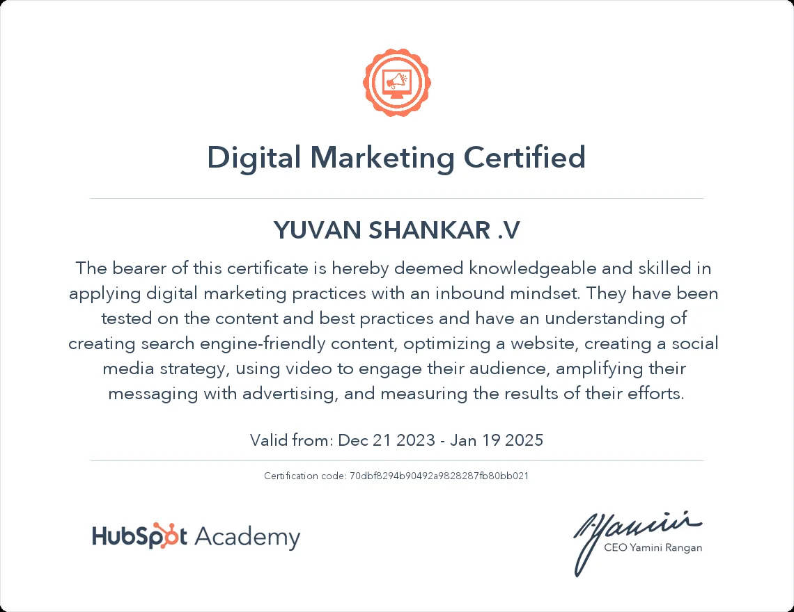
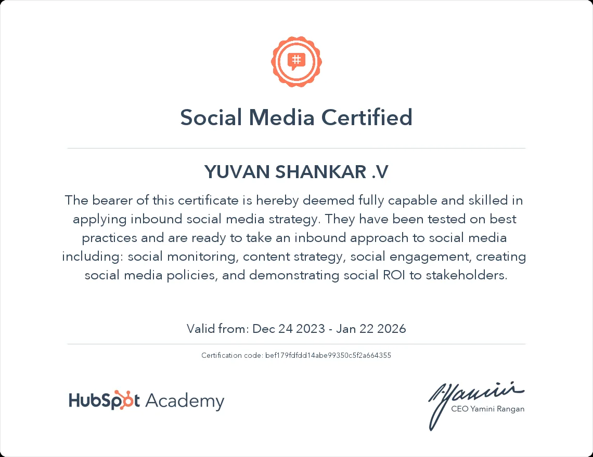

Meta & Google Ads
Campaign planning, targeting, creative direction and optimization.
Yuvan Digital Marketing is a Chennai-based agency built to make professional digital marketing more accessible to growing businesses.

Yuvan Shankar brings 3+ years of professional experience and 2+ years of focused digital marketing experience to the agency. His work spans paid advertising, social media, SEO, analytics, creative content and online presence management.
Yuvan Digital Marketing is intentionally positioned as an agency rather than a personal portfolio, so the brand can grow into a larger operation while maintaining a practical, founder-led approach to client work.
Campaign planning, targeting, creative direction and optimization.
Content strategy, social management and creative development.
Keyword research, search visibility and local discovery.
Visual concepts and content that support awareness and acquisition.
Performance tracking and marketing decisions informed by data.
Marketing recommendations connected to real business goals.

Digital marketing certification covering search-friendly content, website optimization, social media strategy, advertising and measurement.

Social media certification covering monitoring, content strategy, engagement and social ROI.
Three-month training completed in September 2024.